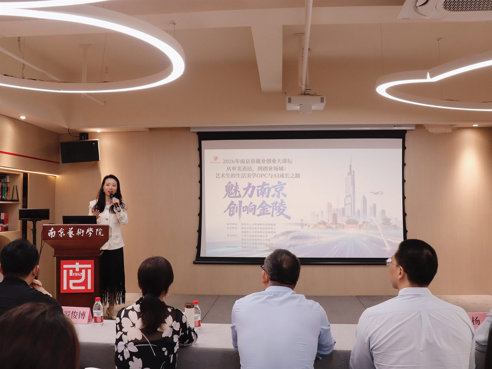

2026 年 5 月 22 日，张佩晶受邀走进南京艺术学院马克思阅读中心，参与「魅力南京·创响金陵」2026 年南京市就业创业大讲坛第 6 场。本场活动由南京市人力资源和社会保障局指导，南京市职业技术培训指导中心、鼓楼区人力资源和社会保障局主办，面向高校学生、OPC 创业者、灵活就业人员及小微企业主，以线下宣讲和线上直播结合的形式举行。
张佩晶以南京市企业数字化转型研究会特聘专家、AI 赋能教练身份，分享《从审美表达到创业场域：艺术生的生活美学 OPC 与 AI 成长之路》。这场分享不是单纯的 AI 工具教学，而是把 AI 放入个人能力、内容表达、社区连接和创业闭环中，帮助青年理解 AI 时代如何把审美能力转化成可持续的事业路径。
- 指导单位：南京市人力资源和社会保障局。
- 主办单位：南京市职业技术培训指导中心、鼓楼区人力资源和社会保障局。
- 活动地点：南京艺术学院马克思阅读中心。
- 参与规模：约 200 名高校学生、OPC 创业者、灵活就业人员及小微企业主。
- 分享主题：艺术生的生活美学 OPC 与 AI 成长之路。
AI 降低了制作门槛，但没有降低被认可的门槛
在分享中，张佩晶以「AI 降低了制作门槛，但没有降低被认可的门槛」为切入点，提醒青年创作者不要把 AI 简单理解为自动生成内容的工具。真正重要的是，创作者能否持续提出问题，能否形成稳定表达，能否找到真实受众，并把作品、社群和服务连接成一个可持续的小闭环。
她进一步拆解「主理人 × OPC 社区 × OpenClaw」的内容增长模型：主理人负责价值判断和个人表达，OPC 社区提供真实反馈与连接，OpenClaw 和 AI 工具帮助非技术背景者更快完成内容、页面、产品原型和运营素材。
AI 让更多人可以开始创作，但只有把表达、社群和付费场景连接起来，创作才会变成事业。
从青年创业教育到企业 AI 培训
南京场与 SENSE AI 的企业 AI 培训主线并不冲突。无论对象是企业高管、市场负责人，还是高校学生和小微创业者，AI 落地都不是简单地使用工具，而是把能力转化成流程，把流程转化成可复用资产。
对于企业来说，这种能力表现为 AI Agent、岗位任务重构和业务流程改造；对于青年创作者来说，它表现为个人内容系统、社区运营和最小付费闭环。两者背后的底层逻辑一致：让 AI 进入真实任务，而不是停留在演示层。